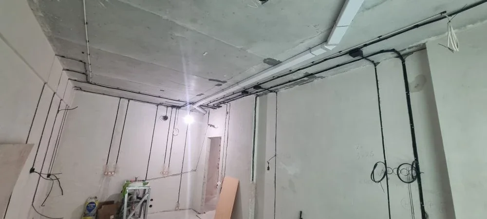

Склад / коммерческое помещение
Электромонтаж склада под арендатора: что предусмотреть до начала работ
Склад часто нужно подготовить быстро: арендатор заезжает, требуется освещение, питание оборудования, розетки, щит и понятная схема обслуживания. Если электромонтаж сделать без учета будущей эксплуатации, переделки появляются уже после запуска объекта.

Какие задачи обычно входят в электромонтаж склада
Состав работ зависит от формата помещения. Чаще всего нужны кабельные трассы, освещение проходов и зон хранения, розетки для обслуживания, линии под ворота, вентиляцию, зарядное оборудование, станки, холодильные установки или другое оборудование арендатора.
Отдельно смотрят щит: есть ли запас по мощности, хватает ли места под новые аппараты, можно ли нормально подписать группы и обслуживать систему после запуска.
Что важно уточнить до расчета
- Площадь склада и высоту потолков.
- Назначение помещения: хранение, производство, сервис, торговый склад или смешанный формат.
- Перечень оборудования и примерные мощности.
- Наличие существующего щита, вводной мощности и проектной документации.
- Сроки заезда арендатора и этапность работ.
Почему склад нельзя считать только по количеству розеток
В складских помещениях критичны трассы, высота монтажа, доступ к обслуживанию, освещенность рабочих зон и резерв по мощности. Две одинаковые площади могут сильно отличаться по стоимости, если в одном случае нужно только освещение, а в другом - силовые линии, оборудование и переработка щита.
Поэтому предварительный расчет лучше делать после просмотра плана, фото и списка оборудования. Так меньше риск получить смету, которая не соответствует реальному объему.
Что влияет на сроки
На сроки влияют готовность помещения, доступ на объект, наличие проекта, поставка кабеля и автоматики, высотные работы, количество линий и необходимость согласовать работы с арендодателем или управляющей компанией.
Если объект нужно запускать быстро, работы лучше делить на этапы: сначала критичное питание и освещение, затем дополнительные линии и доработка щита.
Что прислать для предварительной оценки
Для первого расчета подойдут план помещения, фото существующего щита, фото потолка и стен, список оборудования, желаемые сроки и адрес объекта в Екатеринбурге или Свердловской области.
Если точного проекта нет, можно начать с короткого описания: что за склад, кто будет арендатором, что нужно подключить и когда помещение должно быть готово к работе.
Нужно подготовить склад к заезду арендатора?
Пришлите план, фото помещения и список оборудования. Подскажем, какие данные нужны для расчета электромонтажа и щита.
Оставить заявку